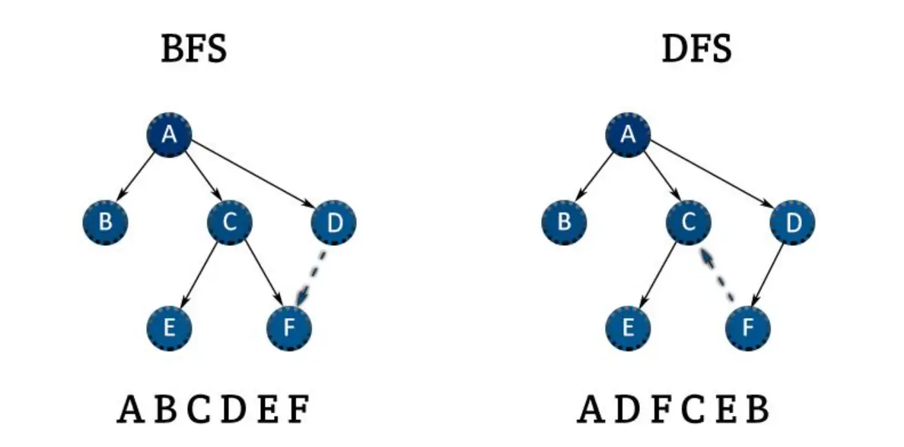

Algorithms and Problem Solving
Algorithms and problem solving are important concepts in computer science. They help us understand problems and develop step-by-step solutions to solve them efficiently.
1. Problem Solving
Problem solving is the process of identifying a problem, understanding its requirements, and finding a suitable solution.
2. Algorithm
An algorithm is a set of clear, step-by-step instructions used to solve a problem or perform a particular task.
Example: Algorithm to Make Tea
- Start.
- Boil water.
- Add tea and sugar.
- Add milk.
- Boil for a few minutes.
- Pour tea into a cup.
- Stop.
Understanding Computational Problems
A computational problem is a problem that can be solved using a computer by following a set of instructions or an algorithm.
To understand a computational problem, we need to identify three main things:
- Input: The data or information provided to solve the problem.
- Process: The steps or operations performed on the input data.
- Output: The final result produced after processing the input.
Example: Adding Two Numbers
- Input: Two numbers (10 and 20).
- Process: Add both numbers.
- Output: 30.
Classifying Computational Problems
Computational problems can be classified into different types based on the results they require. The four common types are Decision, Search, Optimization, and Counting problems.
1. Decision Problems
Decision problems require a Yes or No answer. They determine whether a particular condition is true or false.
Example: Is 10 greater than 5?
Answer: Yes.
2. Search Problems
Search problems involve finding a specific item or solution from a given set of data.
Example: Find a student's name in a class list.
3. Optimization Problems
Optimization problems involve finding the best possible solution from several available options.
Example: Finding the shortest route from home to school.
4. Counting Problems
Counting problems involve finding the total number of items or solutions that meet specific conditions.
Example: Count the total number of students who passed an exam.
Well-Defined vs. Ill-Defined Problems
Problems can be classified into two types based on how clearly their goals, requirements, and solutions are described.
1. Well-Defined Problems
A well-defined problem is a problem that has a clear goal, specific requirements, and enough information to find a solution.
Examples:
- Adding two numbers.
- Finding the largest number in a list.
- Calculating the average marks of students.
2. Ill-Defined Problems
An ill-defined problem is a problem that does not have a clearly defined goal, requirements, or a single correct solution. It may have several possible solutions.
Examples:
- How to make a city more beautiful.
- How to improve the education system.
- How to make people happier.
Algorithms for Problem Solving
Algorithms provide step-by-step instructions to solve computational problems. Different methods can be used to develop algorithms depending on the nature of the problem.
Generate and Test Method
The Generate and Test method is a problem-solving technique in which we generate possible solutions and test each one to find the correct solution.
In simple words, we try different possible solutions until we find one that works.
Example: Finding a Number
Suppose we want to find a number between 1 and 10 that is divisible by both 2 and 3.
- Generate: 4
- Test: 4 is not divisible by 3.
- Generate: 6
- Test: 6 is divisible by both 2 and 3.
- Result: 6 is the correct solution.
Problem Solvability and Complexity
Problem solvability and complexity are important concepts in computer science. They help us understand whether a problem can be solved by a computer and how much time or resources are required to solve it.
1. Solvable vs. Unsolvable Problems
A. Solvable Problems
A solvable problem is a problem for which an algorithm exists that can produce the correct solution in a finite amount of time.
Examples:
- Adding two numbers.
- Finding the largest number in a list.
- Calculating the average of marks.
B. Unsolvable Problems
An unsolvable problem is a problem for which no algorithm can produce a correct solution for every possible input.
Example: Halting Problem
The Halting Problem involves determining whether a given computer program will eventually stop or run forever.
2. Tractable vs. Intractable Problems
A. Tractable Problems
A tractable problem is a problem that can be solved by a computer in a reasonable amount of time, even when the amount of input data increases.
Examples:
- Sorting a list of numbers.
- Finding an item in a list.
- Adding two numbers.
B. Intractable Problems
An intractable problem is a problem that becomes very difficult and time-consuming to solve as the amount of input data increases. Finding an exact solution may require too much time and computing power.
Examples:
- Finding the shortest possible route when visiting many cities.
- Creating the best possible timetable for hundreds of classes and teachers.
Algorithm Analysis
Algorithm analysis is the process of evaluating an algorithm to understand how efficiently it solves a problem.
There are two main factors used in algorithm analysis:
- Time Complexity: Measures how much time an algorithm takes to complete its task.
- Space Complexity: Measures how much memory an algorithm requires to complete its task.
1. Time Complexity
Time Complexity measures how the execution time of an algorithm increases when the input size increases.
In simple words, it tells us how much time an algorithm takes to solve a problem based on the amount of input data.
2. Big O Notation
Big O Notation is a mathematical method used to describe the time complexity of an algorithm.
Big O notation is written using the letter O.
3. How Big O Notation Works
Big O notation describes how the number of operations performed by an algorithm changes as the input size (n) increases.
A. O(1) – Constant Time
Constant Time means an algorithm takes the same amount of time to perform an operation, regardless of the input size.
Example: Accessing an element from a list using its index.
numbers = [10, 20, 30, 40, 50]
print(numbers[2])Output:
30Whether the list contains 5 or 1,000 elements, accessing an element by its index takes constant time.
B. O(n) – Linear Time
Linear Time means the number of operations increases directly with the input size.
Example: Printing all elements of a list.
numbers = [10, 20, 30, 40, 50]
for num in numbers:
print(num)If the list contains 5 elements, the loop runs 5 times. If it contains 100 elements, the loop runs 100 times.
C. O(n²) – Quadratic Time
Quadratic Time means the number of operations increases with the square of the input size. It commonly occurs when one loop is placed inside another loop.
Example:
numbers = [1, 2, 3]
for i in numbers:
for j in numbers:
print(i, j)If the list contains 3 elements, the operation runs 9 times. If it contains 5 elements, it runs 25 times.
D. O(log n) – Logarithmic Time
Logarithmic Time means the problem size is reduced by a fixed factor during each step, commonly by half.
Example: Finding a number in a sorted list using Binary Search.
Suppose we want to find 40 in the following sorted list:
[10, 20, 30, 40, 50, 60, 70]
Instead of checking every element, Binary Search repeatedly divides the search area into half until the required number is found.
This makes searching faster, especially when dealing with large lists.
2. Space Complexity
Space Complexity measures how much memory an algorithm requires to complete its task.
In simple words, it tells us how much computer memory an algorithm uses while solving a problem.
Algorithm Design Techniques
Algorithm Design Techniques are different methods used to develop algorithms for solving problems efficiently. Each technique follows a specific approach to find a solution.
There are four common algorithm design techniques:
1. Divide and Conquer
Divide and Conquer is an algorithm design technique in which a large problem is divided into smaller subproblems. Each subproblem is solved separately, and their results are combined to get the final solution.
Example: Merge Sort – Divides a list into smaller parts, sorts them, and combines them into a sorted list.
2. Greedy Algorithms
A Greedy Algorithm is a technique that solves a problem by choosing the best available option at each step, hoping to achieve the overall best solution.
Examples:
- Shopping: Choosing the cheapest available item at each step to reduce the total cost.
- Shortest Path: Choosing the nearest available route at each step to find the shortest path.
3. Dynamic Programming
Dynamic Programming is a technique used to solve a complex problem by solving smaller parts of it and saving their results to use them again when needed.
Example: If we have already calculated 2 + 3 = 5, we can save the result 5 and use it again whenever needed instead of calculating it again.
4. Backtracking
Backtracking is an algorithm design technique that tries different possible solutions and goes back whenever a choice does not lead to a correct solution.
Examples:
- Finding a Word in a Puzzle: Trying different letter combinations and going back when they do not form the required word.
- Password Combination: Trying different possible combinations to find the correct combination in a puzzle.
Commonly Used Algorithms
Commonly used algorithms are step-by-step methods used to solve different computational problems. Sorting and searching are two common types of algorithms used in computer science.
1. Sorting Algorithms
Sorting Algorithms are used to arrange data in a specific order, such as ascending or descending order.
A. Bubble Sort
Bubble Sort is a sorting algorithm that repeatedly compares two adjacent elements and swaps them if they are in the wrong order. This process continues until the list is sorted.
Example:
Suppose we have the following numbers:
[5, 3, 8, 2]
After sorting in ascending order:
[2, 3, 5, 8]
Complexity: O(n²)
Explanation: Sorting Numbers in Ascending Order
We compare adjacent numbers and arrange them from smallest to largest.
Step 1: Compare 5 and 3. Since 3 is smaller, swap their positions.
[3, 5, 8, 2]
Step 2: Compare 5 and 8. Since 5 is smaller, keep their positions.
[3, 5, 8, 2]
Step 3: Compare 8 and 2. Since 2 is smaller, swap their positions.
[3, 5, 2, 8]
Step 4: Compare 5 and 2. Since 2 is smaller, swap their positions.
[3, 2, 5, 8]
Step 5: Compare 3 and 2. Since 2 is smaller, swap their positions.
Final Result:
[2, 3, 5, 8]
B. Selection Sort
Selection Sort is a sorting algorithm that repeatedly finds the smallest element from the unsorted part of a list and places it at the beginning. This process continues until the entire list is sorted.
Example:
Suppose we have the following numbers:
[5, 3, 8, 2]
After sorting in ascending order:
[2, 3, 5, 8]
Complexity: O(n²)
Explanation: Sorting Numbers in Ascending Order
We find the smallest number from the unsorted part and place it at the beginning.
Step 1: Find the smallest number from [5, 3, 8, 2]. The smallest number is 2. Swap it with 5.
[2, 3, 8, 5]
Step 2: Find the smallest number from the remaining unsorted part [3, 8, 5]. The smallest number is 3. It is already in the correct position.
[2, 3, 8, 5]
Step 3: Find the smallest number from the remaining unsorted part [8, 5]. The smallest number is 5. Swap it with 8.
[2, 3, 5, 8]
Step 4: The remaining number 8 is already in the correct position.
Final Result:
[2, 3, 5, 8]
2. Search Algorithms
Search Algorithms are used to find a specific element or value from a collection of data.
A. Linear Search
Linear Search is a searching algorithm that checks each element one by one until the required element is found or the list ends.
Complexity: O(n)
B. Binary Search
Binary Search is a searching algorithm that finds an element by repeatedly dividing a sorted list into two halves and searching in the half where the element may exist.
Complexity: O(log n)

Exercise Short Questions
1. Differentiate between well-defined and ill-defined problems within the realm of computational problem-solving.
Well-Defined Problems: These problems have clear goals, specific requirements, and enough information to find a solution.
Ill-Defined Problems: These problems do not have clearly defined goals or requirements and may have several possible solutions.
2. Outline the main steps involved in the Generate-and-Test method.
The main steps of the Generate-and-Test method are:
- Generate: Create a possible solution.
- Test: Check whether the solution meets the required conditions.
- Repeat: If the solution is incorrect, generate and test another solution.
- Stop: Continue until a correct solution is found or all possibilities are tested.
3. Compare tractable and intractable problems in the context of computational complexity.
Tractable Problems: These problems can be solved by a computer in a reasonable amount of time, even when the input size increases.
Intractable Problems: These problems become very difficult and time-consuming to solve as the input size increases. They may require too much time and computing power.
4. Summarize the key idea behind Greedy Algorithms.
Greedy Algorithms solve a problem by choosing the best available option at each step, hoping to achieve the overall best solution.
5. Discuss the advantages of using Dynamic Programming.
Dynamic Programming has the following advantages:
- It breaks complex problems into smaller subproblems.
- It stores the results of solved subproblems and reuses them when needed.
- It avoids repeated calculations and reduces execution time.
- It helps solve complex problems more efficiently.
6. Compare the advantages of Breadth-First Search (BFS) with Depth-First Search (DFS) in graph traversal.
Breadth-First Search (BFS):
- It visits neighboring vertices before moving to the next level.
- It can find the shortest path in an unweighted graph.
Depth-First Search (DFS):
- It explores one path as deeply as possible before going back.
- It can use less memory than BFS in some graphs.
7. Explain the importance of breaking down a problem into smaller components in algorithmic thinking.
Breaking down a problem into smaller components makes it easier to understand and solve. Each smaller part can be solved separately, and their results can be combined to solve the complete problem.
8. Identify the key factors used to evaluate the performance of an algorithm.
Two main factors are used to evaluate the performance of an algorithm:
- Time Complexity: Measures how much time an algorithm takes as the input size increases.
- Space Complexity: Measures how much memory an algorithm requires to complete its task.
Test Yourself: Interactive MCQs (Algorithms and Problem Solving)
Algorithms and Problem Solving MCQs: Class 11 Computer Science
FAQs
Class 11 Computer Science Chapter 3: Algorithms and Problem Solving FAQs
Problem solving in computer science is the process of identifying a problem and finding a suitable solution using logical steps and computational methods.
An algorithm is a step-by-step set of instructions used to solve a problem or complete a specific task.
The three main parts are Input, Process, and Output. Input is the data provided, Process is the work performed on the data, and Output is the final result.
The main types of computational problems are Decision Problems, Search Problems, Optimization Problems, and Counting Problems.
A well-defined problem has clear goals, inputs, and rules for finding a solution. An ill-defined problem has unclear goals or requirements and may have several possible solutions.
Generate and Test is a problem-solving method in which possible solutions are created one by one and tested until a correct solution is found.
A solvable problem can be solved by an algorithm in a finite number of steps. An unsolvable problem cannot be solved by any algorithm for all possible cases.
Tractable problems can be solved efficiently using available computing resources. Intractable problems require an impractically large amount of time or resources as the input size increases.
Algorithm analysis is the process of evaluating an algorithm to understand how efficiently it solves a problem in terms of time and memory usage.
Time Complexity measures how the execution time of an algorithm increases with input size, while Space Complexity measures how much memory the algorithm requires.
Big O Notation is used to describe how an algorithm's time or memory requirements grow as the input size increases. It helps compare the efficiency of algorithms.
The main algorithm design techniques include Divide and Conquer, Greedy Algorithms, Dynamic Programming, and Backtracking. These techniques help solve problems in different ways.
Bubble Sort repeatedly compares adjacent elements and swaps them if they are in the wrong order. Selection Sort repeatedly finds the smallest element from the unsorted part and places it in the correct position.
Linear Search checks elements one by one until the required value is found. Binary Search repeatedly divides a sorted list into halves to find the required value more quickly.
Binary Search is generally faster for large, sorted lists because it has O(log n) time complexity. Linear Search has O(n) time complexity and can be used even when the data is not sorted.